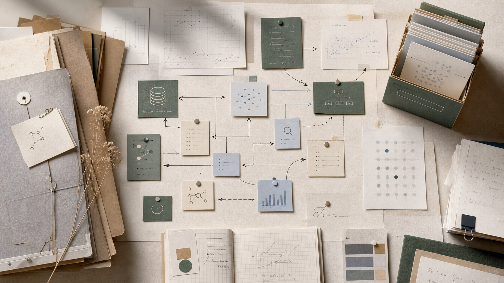

连续体机器人建模与控制
面向柔性、冗余、强耦合机器人结构，研究形态建模、运动控制与任务空间映射方法。
Research
我研究柔顺连续体机器人的结构感知、触觉反馈与环境交互，关注机器人在狭窄、非结构化或接触丰富场景中的可靠操作能力。
面向柔性、冗余、强耦合机器人结构，研究形态建模、运动控制与任务空间映射方法。
设计和集成触觉传感单元，提取接触力、形变、滑移等信息，增强机器人对环境的细腻感知。
融合多模态传感与控制策略，支持机器人在复杂接触任务中的自适应操作与安全交互。
Outputs
Projects

Academic Profile
西安交通大学，开展连续体机器人与触觉传感相关研究。
可继续补充教学、审稿、项目合作、课题组信息或招生方向。